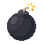
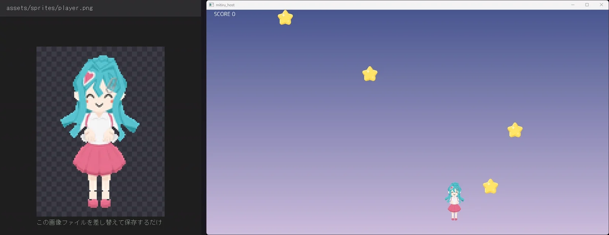
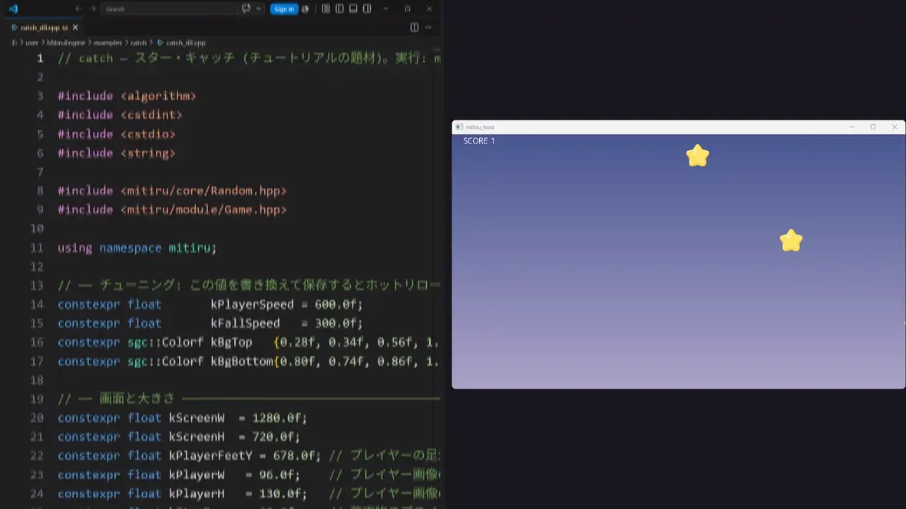
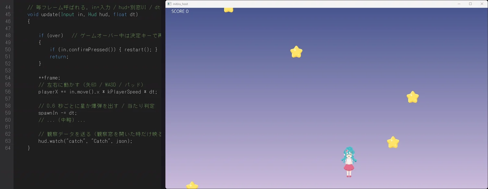
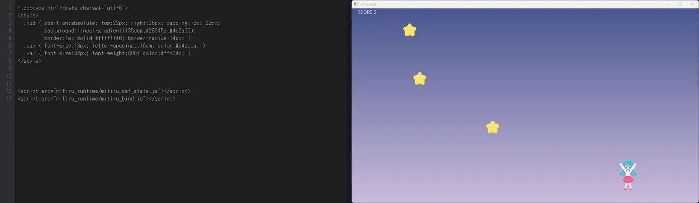

TUTORIAL
はじめてのゲーム
C++ だけで小さなゲーム「スター・キャッチ」を作ります。下のプレイヤーを左右に動かし、落ちてくる星を受け止めるとスコアが増える、それだけのゲームです。実際に組み立てる順に — プレイヤーを動かし、ゲームの形にして、絵を入れ、数字を調整し、状態を覗く窓を開く — 進めます。エンジンの機能は、それが必要になる場面で順に出てきます。
作るもの
完成形がこれです。プレイヤー・星・爆弾は画像（スプライト）、背景は draw で描くグラデーション、左上の SCORE は文字です。すべて C++ で描いています。星を取ると SCORE が増え、混ざっている爆弾を取ると GAME OVER、Space で再開します。

drawGradientRect、SCORE は s.text です。プレイヤーを動かす
最初に、プレイヤーを左右に動かすところを作ります。まずは Mitiru CLI で新しいプロジェクトを作ります。
mitiru new my-catch cd my-catch
書き換えるのは src/main.cpp です。次のように書きます。
#include <mitiru.hpp> using namespace mitiru; struct CatchGame { float playerX = 640; // プレイヤーの左右位置（中心） void update(Input in, float dt) { playerX += in.move().x * 600 * dt; // 矢印キーなどで左右に動かす } void draw(Screen& s) { // まだ絵がないので、四角をプレイヤーに見立てて描く s.drawRect({playerX - 48, 548, 96, 130}, {0.9f, 0.3f, 0.7f, 1.0f}); } }; MITIRU_GAME(CatchGame) // この struct をゲームの入口にする
保存したら、実行します。
mitiru run
ウィンドウが開いて、紫の四角が矢印キーで左右に動きます。短いコードですが、これだけで「プレイヤーが入力で動く」という核ができています。中身を順番に見ていきます。
#include <mitiru.hpp>── これ 1 行で、ゲームを書くのに必要なもの（入力・画面・乱数・ゲームの入口）がまとめて使えるようになります。using namespace mitiru;を書いておくと、InputやScreenを短い名前で書けます。struct CatchGame── ゲームの状態（いまどうなっているか）を入れる箱です。ここではプレイヤーの位置playerXだけを持っています。update(Input in, float dt)── 毎フレーム（1 秒に約 60 回）呼ばれる関数です。inは入力、dtは前のフレームからの経過秒。ここで状態を進めます。draw(Screen& s)── これも毎フレーム呼ばれます。sが画面で、sに対して図形や画像を描きます。MITIRU_GAME(CatchGame)── このstructを「ゲーム本体」としてエンジンに登録します。これでmitiru runがCatchGameを動かせるようになります。
update で状態を進め、draw で描きます。これを 1 秒に約 60 回くり返します（その回数が FPS）。dt は 1 フレームの長さ（秒）です。動きの肝は in.move() です。これは移動入力を 1 つにまとめて返します（.x と .y が各 −1〜1）。矢印キー・WASD・ゲームパッドの左スティックが、すべてこの 1 つに合流します。だから playerX += in.move().x * 600 * dt と書くだけで、どの入力でも左右移動になります。速度の 600 はいったん直に書いておき、あとで触りやすい場所に出します。
描画の s.drawRect(矩形, 色) は四角を描きます。矩形は {左上x, 左上y, 幅, 高さ}、色は {r, g, b, a}（各 0〜1）で、ここでは紫を指定しています。絵はまだ無いので、四角をプレイヤーに見立てています。座標と矩形の数え方は、図にするとこうです。
sprite も drawRect も「左上の座標」で置きます。Rect は「左上の (x, y)」と「幅 w・高さ h」の 4 つの数で決まります。s.drawRect({x, y, w, h}, 色) でこの四角を描きます。落ちてくる星でゲームにする
四角が動いたら、ゲームの形にします。上から星を落として、プレイヤーと重なったらスコア、混ざっている爆弾を取ったら終了です。std::clamp と std::to_string を使うので、先頭の include を 2 つ足します。
#include <mitiru.hpp> #include <algorithm> // std::clamp（値を範囲内に収める） #include <string> // std::to_string（数値を文字列に） using namespace mitiru;
状態に「落ちてくる物」「スコア」などを足します。乱数 rng もメンバとして持っておきます。
// 落ちてくる物 1 個分。kind: 0=星（良い）/ 1=爆弾（悪い） struct Item { float x, y; int kind; bool alive; }; struct CatchGame { float playerX = 640; Item items[24] {}; // 落ちてくる物は最大 24 個（全部 alive=false で開始） int score = 0; bool over = false; float spawnIn = 0.0f; // 次の落下物までの残り秒 float happyTimer = 0.0f; // 星を取った直後、喜ぶ顔を出す残り秒 Random rng{1234}; // 乱数（種を固定すると毎回同じ並びになる） // update / draw はこの下 };
update に「出す・落とす・当たり判定」を足します。
void update(Input in, float dt) { if (over) { // ゲームオーバー中は決定キーで再開だけ if (in.confirmPressed()) *this = CatchGame{}; return; } if (happyTimer > 0) happyTimer -= dt; playerX += in.move().x * 600 * dt; playerX = std::clamp(playerX, 48.0f, 1232.0f); // 画面の外に出ないようにする spawnIn -= dt; // 0.6 秒ごとに 1 個出す if (spawnIn <= 0) { spawnIn = 0.6f; for (Item& it : items) if (!it.alive) { it.alive = true; it.x = rng.nextFloat(60, 1220); // 出る x をランダムに it.y = -40; it.kind = rng.nextBool(0.12f) ? 1 : 0; // 12% の確率で爆弾 break; } } Rect player{playerX - 46, 568, 92, 84}; // プレイヤーの判定枠 {x, y, 幅, 高さ} for (Item& it : items) { if (!it.alive) continue; it.y += 300 * dt; // 下へ落とす Rect box{it.x - 28, it.y - 28, 56, 56}; if (player.intersects(box)) { // 枠が重なった = キャッチ if (it.kind == 1) over = true; // 爆弾 → ゲームオーバー else { score += 1; happyTimer = 0.35f; } // 星 → +1 して少し喜ぶ it.alive = false; } else if (it.y > 760) it.alive = false; // 下に抜けたら消す } }
当たり判定はエンジンが持っています。Rect は矩形（{x, y, 幅, 高さ}）です。Rect どうしが重なったかは player.intersects(box) で調べられます（点が矩形に入っているかは .contains()）。ここでは「プレイヤーの判定枠」と「落下物の枠」が重なったら、星なら score を増やし、爆弾なら over を立てています。やり直しは *this = CatchGame{};（状態をまるごと初期値に戻す）の 1 行です。再開の in.confirmPressed() は、決定（Space / Z / Enter / パッド A）を押した瞬間に true になります。
player.intersects(box) で分かります（重なっていれば true）。点が矩形の中にあるかは rect.contains(点) です。当たり判定はこれだけで済みます。draw 側も、星はまだ四角で仮置きします。絵はこの次で入れます。
void draw(Screen& s) { for (Item& it : items) if (it.alive) s.drawRect({it.x - 12, it.y - 12, 24, 24}, it.kind == 1 ? Color{0.9f,0.2f,0.2f,1} : Color{1,0.85f,0.2f,1}); s.drawRect({playerX - 48, 548, 96, 130}, {0.9f, 0.3f, 0.7f, 1.0f}); s.text("SCORE " + std::to_string(score), 24, 20, color::White, 24); }
ここで Color が出てきました。Color{r, g, b, a} は色（各 0〜1）で、color::White のような名前付きの色も使えます。s.text("文字", x, y, 色, 大きさ) は文字を描きます。これで遊べます。紫の四角を動かして、黄色い四角（星のつもり）を受け、たまに混ざる赤い四角（爆弾）を避けます。手触りはまだ素っ気ないですが、ルールは動いています。
画像を 4 枚用意する
絵を入れる前に、画像を 4 枚そろえます。下の画像をそのまま使えます。クリックで保存して、プロジェクトの assets/sprites/ に同じ名前（player.png / player_happy.png / star.png / bomb.png）で置いてください。自分で描き替えても、名前さえ合えば動きます。
{kind=link}
96 × 130 / ふだんの姿
{kind=link}
星を取った直後の表情
{kind=link}
56 × 56 / 取ると +SCORE
{kind=link}

取ると GAME OVER
すべて透過 PNG です（背景が透けるので、重ねても四角い縁が出ません）。
絵を入れる — 四角を画像に
四角を絵に差し替えます。あわせて、速さや色など「あとで何度も触る値」を、書き換えやすいようファイルの先頭に名前を付けて出しておきます。
// ── 書き換えて調整する値。先頭にまとめておくと、後で触りやすい ── constexpr float kPlayerSpeed = 600.0f; // プレイヤーの左右速度 constexpr float kFallSpeed = 300.0f; // 落下スピード constexpr Color kBgTop {0.28f, 0.34f, 0.56f, 1.0f}; // 背景グラデ 上 constexpr Color kBgBottom{0.80f, 0.74f, 0.86f, 1.0f}; // 背景グラデ 下
update の中の 600 を kPlayerSpeed に、300 を kFallSpeed に置き換えます。そして draw を、四角ではなく画像で描くようにします。
void draw(Screen& s) { // 背景: 上→下のグラデーション s.drawGradientRect({0, 0, 1280, 720}, kBgTop, kBgBottom); // 落下物（星 / 爆弾）。56px 画像なので、中心から 28 引いた所を左上にする for (Item& it : items) if (it.alive) s.sprite(it.kind == 1 ? "bomb" : "star", it.x - 28, it.y - 28); // プレイヤー（96×130）。星を取った直後だけ喜ぶ表情に切り替える const char* who = (happyTimer > 0) ? "player_happy" : "player"; s.sprite(who, playerX - 48, 548); s.text("SCORE " + std::to_string(score), 24, 20, color::White, 24); }
s.sprite("id", x, y) は画像を描きます。"id" は画像ファイルの名前で、エンジンはゲームの隣の assets/sprites/<id>.png を探して描きます。"player" なら player.png です。絵を増やすときは、PNG を置いて、その名前を sprite() に渡すだけです。中心を (x, y) に置きたいときは、幅の半分を引いて左上に渡します（96px のプレイヤーなら -48、56px の星なら -28）。表情の切り替えも「どの id を描くか」を変えるだけで、新しい状態は要りません。背景の s.drawGradientRect(矩形, 上の色, 下の色) は、上から下へ色が変わる帯を描きます。
ここで一度 mitiru run を止めて、mitiru watch で起動し直してください。watch で動かしていると、ソースを保存した瞬間に、ゲームを止めずに新しいコードへ差し替わります。これがホットリロードです。watch で走らせたまま draw のプレイヤーの行を四角から sprite に書き換えて保存すると、動いている四角がその場で画像に変わります。画像ファイル自体を別の絵に差し替えて保存しても同じで、その場合はビルドすら要りません。

mitiru watch で走らせたまま、プレイヤーの描画を四角から sprite に書き換えて保存すると、仮の四角がその場で画像に変わります。再起動はしていません。数字を調整する — ホットリロードが活きるところ
絵が入ると、今度は速さや落下が気になってきます。プレイヤーが鈍い、星が速すぎる、背景の色が違う。こうした「何度も値を変えて確かめる」作業は、ホットリロードがいちばん活きるところです。先頭にまとめておいた値を、mitiru watch で動かしたまま、上から書き換えて保存していきます。ゲームは落ちず、スコアも保ったまま、手応えだけが変わります。
kPlayerSpeedを600→1400… プレイヤーがきびきび動きますkFallSpeedを300→820… 星が速く落ちて難しくなりますkBgTop/kBgBottomの色を変える … 背景が夕焼けに変わります

kPlayerSpeed → kFallSpeed → 背景色と順に書き換えて保存するたび、走っているゲームに即反映されます。再起動していないので SCORE はそのままです。普通のテキストエディタで十分です。書き間違えてビルドが壊れても問題ありません。エラーが画面に帯で出て、ゲームは前のコードのまま動き続けます。直して保存すれば元に戻るので、コンソールと往復する必要はありません。
詰まったら、窓を開く
画面を見ても分からないことがあります。スコアが思ったように増えない、ある値が少しずつずれていく。数字が画面に出ていないと、原因が見えません。そんなときは、状態をそのまま映す窓を開きます。
窓を開くには、update に hud を受け取るようにして、hud.open(...) を呼びます。引数に Hud hud を足すだけです。
void update(Input in, Hud hud, float dt) { // ← hud を受け取る hud.open(Tool::Inspector); // 状態を見る窓を開く // …これまでの update の中身… }
hud は、別窓や HTML 画面への橋渡し役です。同じ窓は一度しか開きません（毎フレーム呼んでもエンジンが重複を弾きます）。コマンドでツールを起動するのではなく、どの窓を見たいかがコードに残ります。開いた窓には、struct のフィールド（playerX・score など）がそのまま並び、ゲームの隣でライブに動きます。

mitiru watch で走らせたまま hud.open(Tool::Inspector); を打って保存すると、その場で右の窓が開き、playerX・score・frame といった状態がそのまま映ります。窓を開くのにコマンドは要りません。この窓自体も HTML / CSS で出来ています。窓に並ぶフィールドは、MITIRU_REFLECT(CatchGame, playerX, score, …) という 1 行で「この値を見せて」と申告します。自分で計算した途中の値を見たいときは、hud.watch("game", "Catch", "…") で名前を付けて送れば、同じ窓に出ます。値の移り変わりをグラフでも見たいときは、入口を MITIRU_GAME から MITIRU_GAME_SERIES に変えます（全文はその形にしてあります）。
観察窓のほかにも、入力の生の値・過去のフレームへの巻き戻し・録画の再生・fps の計測・音量メーターなどの窓があり、どれも hud.open(Tool::…) の Tool:: を変えれば開きます。大きなエディタを開く代わりに、1 つの窓は 1 つの関心事だけを映す、という作りです。それぞれの窓は、機能リファレンスのデバッグ窓にまとめてあります。
時間を巻き戻す
観察窓で「今」の状態が見えるなら、次は「過去」です。hud.open(Tool::TimeTravel) に変えると、時間軸の窓が開きます。score や playerX の移り変わりがグラフになり、グラフの過去をクリックすると、ゲームがその瞬間の状態へまるごと巻き戻ります。プレイヤーの位置も、落ちている星も、その時のまま再現されます。

playerX の履歴グラフが伸びます。グラフの過去をクリックすると、ゲームがその瞬間の状態へ巻き戻り、そのまま続きを動かせます。バグった瞬間まで戻って、直して、そこから試す、という直し方ができます。窓を切り替えるのに要るのは Tool:: を変える 1 か所だけです。観察窓・タイムトラベル・入力モニタなど、見たいものに合わせて窓を選びます。これができるのも、状態を 1 個にまとめてエンジンが預かっているからです — その仕組みを次で説明します。
巻き戻し・録画・観察を支える仕組み
ホットリロードで状態が消えないのも、窓に状態がそのまま映るのも、録画したプレイを完全に再現できるのも、出どころは 1 つです。ゲームの状態を 1 個の struct にまとめて、それをエンジンが預かっているからです。
エンジンはこの struct をまるごとコピーして、保存したり復元したりします。だから、預かった状態を新しいコードへそのまま渡せますし、毎フレームの状態を記録して過去へ巻き戻せます。これが成り立つには、状態が「まるごとコピーできる素直なデータ」であってほしいのです。具体的には、ポインタや std::vector を持たない型のことです。CatchGame をその形に保っているのは、このためです。
struct にまとめておくと、それは「まるごとコピーできるバイト列」になります。エンジンはこれをコピーして渡したり戻したりするだけ。だからホットリロード・巻き戻し・録画再生が、同じ 1 つの仕組みから出てきます。絵をゲームが持たず、"player" のような名前（id）で参照しているのも、ここに効いています。画像そのものはエンジン側がまとめて持ち、ゲームは名前の文字列を渡すだけなので、struct は重いデータを抱えず、素直なまま保てます。
「何が反映されて、何が残るか」も、ここから決まります。値がコードに焼き込まれるものか、実行中の状態かで、3 つに分かれます。
| 反映される code | constexpr の定数（kPlayerSpeed など）・update / draw のロジック・スプライトの画像。新しいコードや絵に焼き込まれて丸ごと入れ替わるので、保存するたびに即反映されます。ここまでで触ってきたのは全部これです。 |
| 残る state | struct のいまの値（score・playerX・落下物の位置）。状態は預かったまま新しいコードへ渡されるので、走行中の値はそのまま残ります。だから初期値の playerX = 640 を 100 に書き換えても、走っているプレイヤーは動きません（再起動して初めて効きます）。 |
| 壊れる layout | struct にフィールドを足す・消す・並べ替える・型を変える。状態の形が変わると、預かっていたデータが新しい形に合わず壊れます（リセットされます）。形を変えるときは再起動が安全です。 |
struct のフィールド（状態の形）を変えたときだけ再起動。このループ全体を、状態を 1 個の struct にまとめてエンジンに預ける形（MITIRU_GAME）が支えています。見た目を HTML / CSS にする
いまスコアは s.text(...) で C++ から直接描いています。これを HTML と CSS の HUD に置き換えられます。ゲームのルール（C++）はそのままに、見た目だけを Web の書き方で作り直せます。
mitiru new で作ったプロジェクトは、こうなっています。ロジックは src/main.cpp（C++）、画面は assets/scene.html（HTML / CSS）、絵は assets/sprites/（PNG）です。
my-catch/ ├─ mitiru.toml # 設定（ウィンドウサイズなど） ├─ src/ │ └─ main.cpp # ← ゲームのロジック（C++） └─ assets/ ├─ scene.html # ← 画面（HTML/CSS）。HUD の入口 └─ sprites/ # ← スプライト（PNG）。s.sprite("id") の id に対応 ├─ player.png ├─ player_happy.png ├─ star.png └─ bomb.png
エンジンはゲーム起動時に assets/scene.html を読み込み、ゲーム画面の上に透明なオーバーレイとして重ねます。だから C++ が描いた絵（背景・星・プレイヤー）の上に、HTML の HUD が乗ります。scene.html は普通の HTML で、CSS は <style> の中に書きます。末尾の <script> 2 行はエンジン付属の部品で、mitiru build が mitiru_runtime/ を隣に自動コピーするので、この 2 行をそのまま書きます。
<!doctype html> <html> <head> <meta charset="utf-8"> <style> /* CSS はここに書きます。影・角丸・色、Web と同じです */ .hud { position: absolute; top: 16px; left: 20px; font: bold 28px sans-serif; color: #fff; text-shadow: 0 2px 6px rgba(0,0,0,.6); } </style> </head> <body> <!-- data-m-text="名前" = その名前で C++ が送った値をここに表示 --> <div class="hud">SCORE <span data-m-text="view.hud.score">0</span></div> <!-- エンジン付属の 2 行（毎回そのまま）--> <script src="mitiru_runtime/mitiru_cef_state.js"></script> <script src="mitiru_runtime/mitiru_bind.js"></script> </body> </html>
肝は <span data-m-text="view.hud.score">0</span> です。「この要素の中身に、view.hud.score という名前で届いた値を入れて」という印で、中の 0 はまだ値が来ていないときに見えるフォールバックです。値を送るのは update の中で、hud.set(...) を 1 行呼ぶだけです。
void update(Input in, Hud hud, float dt) { // …これまでの中身はそのまま… hud.set("view.hud.score", score); // scene.html の同じ名前へ届く }
名前 "view.hud.score" は、scene.html の data-m-text="view.hud.score" と完全に一致させてください。これが C++ と画面をつなぐ唯一の約束です。あとは要らなくなった s.text("SCORE …") を draw から消せば、表示が HTML の HUD に切り替わります。C++ は hud.set("名前", 値) で送り、HTML は data-m-text="名前" で受ける。つなぎの JavaScript は 1 行も要りません。あとは CSS を盛れば、影・角丸・グラデ・アニメ付きの HUD になります。
HTML と CSS も、ホットリロードできます。 scene.html や CSS を書き換えて保存すると、ゲームを止めずに画面がその場で更新されます。こちらは DLL の再ビルドも要らず、保存した瞬間に反映されます。レイアウト・色・余白を、走らせたまま詰められます。

scene.html / 右＝ゲーム）。空の scene.html に data-m-text="view.hud.score" を持つ HUD を足して保存すると、再ビルドせずに HTML / CSS の HUD（右上）がその場で出ます。値は hud.set で送ったスコアです（左上の C++ の s.text と同じ値）。全コード
ここまでを 1 つにまとめた、そのまま遊べる src/main.cpp の全文です。assets/sprites/ に 4 つの PNG を置いて mitiru run で動きます。長いので折りたたんであります。入口は MITIRU_GAME_SERIES（値の履歴グラフ付き）にし、観察窓に出すフィールドを MITIRU_REFLECT で申告した形にしてあります。
src/main.cpp の全文
// catch — スター・キャッチ #include <algorithm> // std::clamp #include <cstdint> #include <cstdio> #include <string> // std::to_string #include <mitiru.hpp> // エンジン本体 (Game / Input / Hud / Screen / Color / Rect / Random / MITIRU_GAME) using namespace mitiru; // ── 書き換えて調整する値。保存するとホットリロードで即反映される ── constexpr float kPlayerSpeed = 600.0f; // プレイヤーの左右速度 constexpr float kFallSpeed = 300.0f; // 落下スピード constexpr Color kBgTop {0.28f, 0.34f, 0.56f, 1.0f}; // 背景グラデ 上 constexpr Color kBgBottom{0.80f, 0.74f, 0.86f, 1.0f}; // 背景グラデ 下 // ── 画面と大きさ ── constexpr float kScreenW = 1280.0f; constexpr float kScreenH = 720.0f; constexpr float kPlayerFeetY = 678.0f; // プレイヤーの足元の y constexpr float kPlayerW = 96.0f; constexpr float kPlayerH = 130.0f; constexpr float kItemR = 28.0f; // 落下物スプライト (56px) の半径 constexpr int kMaxItems = 24; // 落ちてくる物 1 個 (ただのデータ)。kind: 0=星(良) / 1=爆弾(悪)。 struct Item { float x, y; int kind; bool alive; }; // ── ゲームの状態 (ポインタや vector を持たない、まるごとコピーできるデータ) ── struct CatchGame { float playerX = kScreenW * 0.5f; Item items[kMaxItems] {}; int score = 0; bool over = false; float spawnIn = 0.0f; float happyTimer = 0.0f; std::uint32_t frame = 0; // 経過フレーム (履歴グラフの横軸) bool opened = false; Random rng{1234}; // 種を固定するとリプレイが決定論的になる void update(Input in, Hud hud, float dt) { if (!opened) { hud.open(Tool::Inspector); opened = true; } // 観察窓を 1 回だけ開く if (over) { if (in.confirmPressed()) { CatchGame fresh{}; fresh.opened = opened; *this = fresh; } return; } if (happyTimer > 0.0f) { happyTimer -= dt; } ++frame; playerX += in.move().x * kPlayerSpeed * dt; playerX = std::clamp(playerX, kPlayerW * 0.5f, kScreenW - kPlayerW * 0.5f); spawnIn -= dt; if (spawnIn <= 0.0f) { spawnIn = 0.6f; for (Item& it : items) if (!it.alive) { it.alive = true; it.x = rng.nextFloat(60.0f, kScreenW - 60.0f); it.y = -40.0f; it.kind = rng.nextBool(0.12f) ? 1 : 0; break; } } const Rect player{playerX - 46.0f, kPlayerFeetY - 110.0f, 92.0f, 84.0f}; for (Item& it : items) { if (!it.alive) { continue; } it.y += kFallSpeed * dt; const Rect box{it.x - kItemR, it.y - kItemR, kItemR * 2.0f, kItemR * 2.0f}; if (player.intersects(box)) { if (it.kind == 1) { over = true; } else { score += 1; happyTimer = 0.35f; } it.alive = false; continue; } if (it.y > kScreenH + 40.0f) { it.alive = false; } } // 観察窓へ送る (開いている時だけ映る) char json[96]; std::snprintf(json, sizeof(json), "{\"score\":%d,\"playerX\":%d}", score, static_cast<int>(playerX)); hud.watch("catch", "Catch", json); } void draw(Screen& s) { s.drawGradientRect(Rect{0.0f, 0.0f, kScreenW, kScreenH}, kBgTop, kBgBottom); for (const Item& it : items) if (it.alive) s.sprite(it.kind == 1 ? "bomb" : "star", it.x - kItemR, it.y - kItemR); const char* who = (happyTimer > 0.0f) ? "player_happy" : "player"; s.sprite(who, playerX - kPlayerW * 0.5f, kPlayerFeetY - kPlayerH); s.text("SCORE " + std::to_string(score), 24, 20, color::White, 24); if (over) { const float goW = s.measureText("GAME OVER", 44.0f).x; s.text("GAME OVER", (kScreenW - goW) * 0.5f, 312.0f, color::White, 44); const float subW = s.measureText("press SPACE to retry", 20.0f).x; s.text("press SPACE to retry", (kScreenW - subW) * 0.5f, 376.0f, color::Gray, 20); } } }; // 観察窓 / 履歴グラフ用に、状態から値を 1 つ引く関数 double scoreProbe(const void* m) { return static_cast<const CatchGame*>(m)->score; } double playerXProbe(const void* m) { return static_cast<const CatchGame*>(m)->playerX; } // 観察窓に出す状態のフィールドを申告する MITIRU_REFLECT(CatchGame, playerX, score, over, frame, spawnIn, happyTimer); // ゲームの入口 + 値の履歴グラフ (score / X の移り変わりを自動で記録する) MITIRU_GAME_SERIES(CatchGame, { "score", "Score", &scoreProbe, 0.0, 0 }, { "x", "Player X", &playerXProbe, 0.0, 0 });
よく使う関数（in / hud / s）
ゲームを書くとき、触るのは主に 3 つのオブジェクトです。update(Input in, Hud hud, float dt) の in と hud、そして draw(Screen& s) の s。よく使うものを並べておきます。一度に覚える必要はなく、必要になったときに見てください。
in — 入力を読む（Input）
| in.move() | 移動入力を 1 つに合成（矢印 / WASD / 左スティック）。.x .y 各 −1〜1。x += in.move().x * speed * dt |
| in.confirmPressed() | 「決定」を押した瞬間（Space / Z / Enter / パッド A）。再開・メニュー送りなど |
| in.down(Key::Left) | キーが押されている間ずっと true（個別キーが要るとき） |
| in.pressed(Key::Space) | 押した瞬間だけ true / in.released(Key::Z) は離した瞬間 |
| in.mouseDown(0) / mouseX() / mouseY() | マウスのボタンと座標（0=左 1=右 2=中） |
| in.padDown(Pad::A) / leftStick() | ゲームパッド（つながっていれば自動で使えます） |
hud — 送る・鳴らす・演出・窓（Hud）
| hud.set("view.hud.score", score) | HTML の表示へ値を送る（data-m-text が受ける） |
| hud.play("hit") | 効果音を鳴らす（hud.play("hit", 0.6f) で音量指定） |
| hud.flash(color::White) | 画面を一瞬フラッシュ（被弾演出など） |
| hud.screenshot() | その瞬間の画面を画像保存。if (over) hud.screenshot(); でゲームオーバーだけ自動保存 |
| hud.open(Tool::Inspector) | 独立ウィンドウを開く（何度呼んでも 1 回だけ開く） |
| hud.watch("game", "Catch", json) | 観察窓に好きな値を送る |
| hud.quit() | ゲームを終了する |
s — 画面に描く（Screen）
| s.sprite("player", x, y) | 画像を描く。id は assets/sprites/<id>.png。(x, y) は左上。s.sprite(id, x, y, scale) で拡大縮小 |
| s.drawRect({x, y, w, h}, color) | 四角を描く（色は Color{r,g,b,a} か color::Red）。s.drawRect(x, y, w, h, color) でも書ける |
| s.drawGradientRect(rect, top, bottom) | 上→下のグラデーション矩形（背景に） |
| s.measureText("文字", 44) | 描いたときの文字の幅・高さを返す。(1280 - w)/2 で中央寄せ |
| s.text("SCORE", x, y, color::White, 24) | 文字を描く |